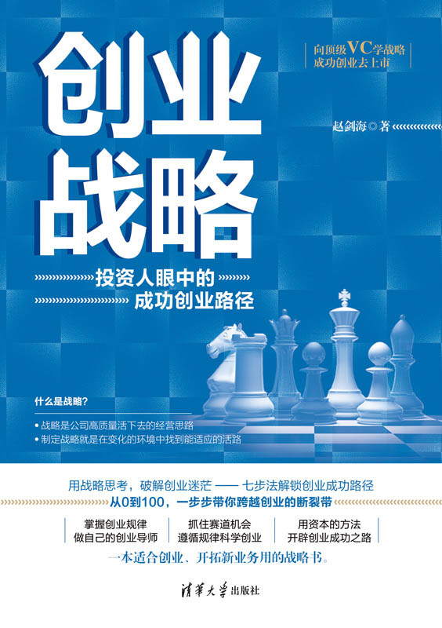
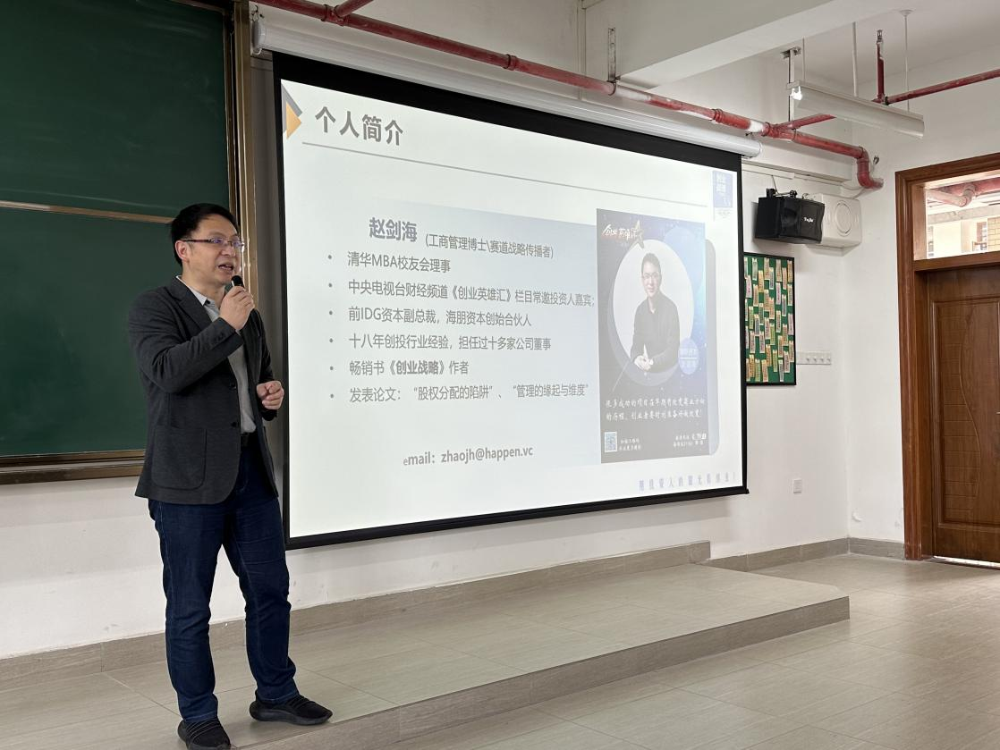

旧业务仍在运转，但增长空间持续收窄
需要分清是经营效率问题，还是所处赛道的价值空间正在缩小。
赛道战略处理的是方向选择。它适合产业逻辑发生变化、原有增长路径失效或企业准备进入新业务的时刻。
需要分清是经营效率问题，还是所处赛道的价值空间正在缩小。
需要判断价值迁移到哪里，企业应该守住、迁移还是进入新的位置。
需要把机会大小、窗口期和自身资源放在同一套判断框架中比较。
需要先统一业务逻辑，再讨论BP、组织投入和阶段目标。
如果问题只是获客、销售或交付效率，就应先解决经营问题；只有当产业机会、客户价值或业务边界发生变化时，赛道战略才是合适工具。
这套框架不是换一个名字谈竞争，而是从机会、资源与赛道地图开始，逐步形成路径、创新重点、目标和竞争支点。
外部变化带来了什么真实需求，窗口期是否已经出现？
哪些资源能转化为客户愿意买单的优势？
核心客群、产品价值和商业模式如何构成一条赛道？
从哪里进入、先做什么、关键节点怎样安排？
产品、市场与商业模式中，哪一处最值得集中资源？
先确定要建立的行业位置，再推导阶段数字。
把优势建立在可积累、可放大、难替代的价值环节上。

三类服务解决的问题不同。是否进入长期咨询，应由企业问题的复杂度和决策责任决定，而不是先套产品。
帮助创始人与核心团队建立共同的战略讨论语言，并用真实业务进行练习。
围绕增长停滞、第二曲线、产业变局或新业务进入，完成关键事实核对和选择比较。
先校正赛道、客户价值、商业模式和增长路径，再把判断组织成对外可理解的商业表达。

赵剑海博士曾任IDG资本副总裁，2015年创立海朋资本。长期接触创业、投资与企业辅导后，他将机会识别、赛道地图和路径选择等判断整理为创业战略七步法。
以下内容只呈现公开范围内的咨询议题与研判方向，不展示客户经营数据、商业秘密或未经核验的业绩归因。
注：案例名称与公开范围沿用公司提供材料，正式对外传播应以客户授权版本为准。
赛道战略以产业机会和赛道选择为起点，先判断企业未来应在哪个赛道建立业务，再设计路径、创新重点、阶段目标与竞争支点。
竞争战略主要回答如何在既有市场中建立优势，蓝海战略强调价值创新。赛道战略更早一步，先判断产业变化、赛道机会与企业资源是否匹配，再决定如何进入和建立优势。
适合正在创业、寻找第二曲线、面对行业结构变化或准备进入新业务的企业。若问题仅是短期销售或执行效率，通常应先解决经营问题，而不是立即更换赛道。
先说明企业当前业务、所处行业、主要矛盾和必须作出的决策。双方完成初步判断后，再确定资料清单、参与人员、工作范围和交付方式。
不承诺。咨询的价值是提高战略判断质量、明确选择依据和行动路径，经营结果仍取决于行业环境、组织能力、资源投入与执行。